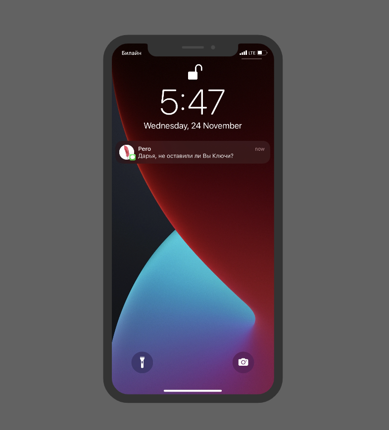
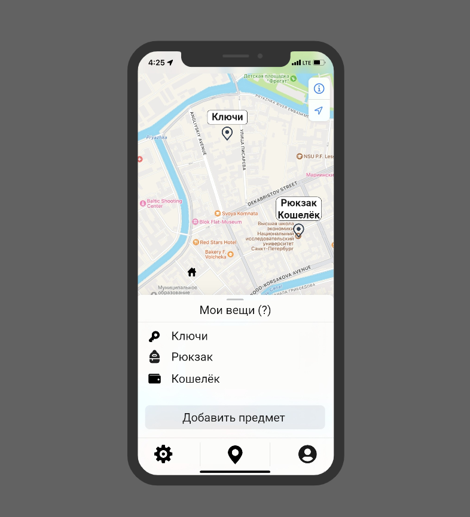

Перо - это маленький маячок, который всегда покажет тебе, где сейчас находится вещь. Прикрепи его к вещи, которую ты часто теряешь, например, к ключам. Когда в очередной раз ты забудешь, куда положил свои ключи, зайди в приложение "Перо" на твоем телефоне и активируй маяк на ключах.
Даже если ты находишься слишком далеко от вещи, локатор даст тебе точную информацию по GPS, а подойдя ближе,ты сможешь найти его точное положение по bluetooth и по звуковому сигналу.